Image quality → noise floor → sampling → detectability → timing precision → goal-by-goal verdict · built 2026-08-21T16:11Z (CV-S5 characterization v2.0 (2026-08-19)) · project hub · the front page
The photometry ran. Before any science goal is defended, one thing has to be established from the data themselves: what precision, at what cadence, over what baseline, does this archive actually deliver? Only then can a science goal be graded, and the grading has to be done against measurements, not against what the observing plan hoped for.
27 of 33 staged (target, era, filter)
series were solved by the ensemble; the 6 refusals
carry no zero points and therefore no photometry to characterize. Every
number below is derived from those solved series and stored in
products/phot/cv_characterization.sqlite.
§6 is the point of the page. Everything before it exists to make its verdicts unarguable.
Seeing, sky brightness, transparency, airmass and the Moon all vary across this archive. A cut has to be made somewhere — but a cut chosen by taste is a knob a referee can turn. What does each quality axis actually cost, in magnitudes of scatter?
Every frame carries one number that answers this without touching the target: the RMS of the four HELD-OUT check stars about their own means. It is measured in magnitudes, it is independent of the science signal, and it responds to every way a frame can be bad. Frames are binned along each axis and the median relative check-star scatter is read off. FWHM is converted to arcsec with the era plate scale (three different scales are in play); airmass is recomputed from coordinates and time because the archive's own AIRMASS cards reach 6877 and are null on 851 CV frames; moon phase and separation come from ephemerides, not from the unaudited MOONANGL/MOONPHAS cards.
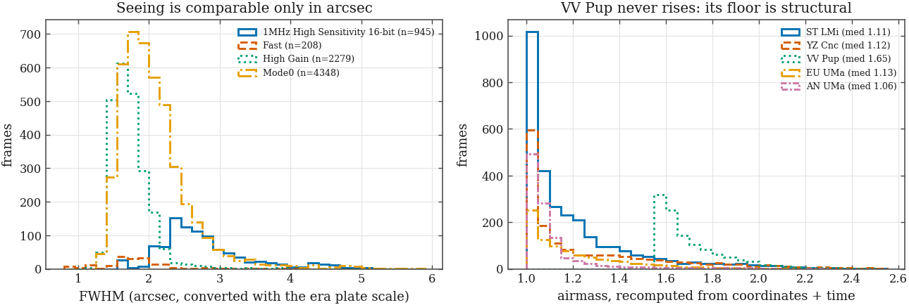
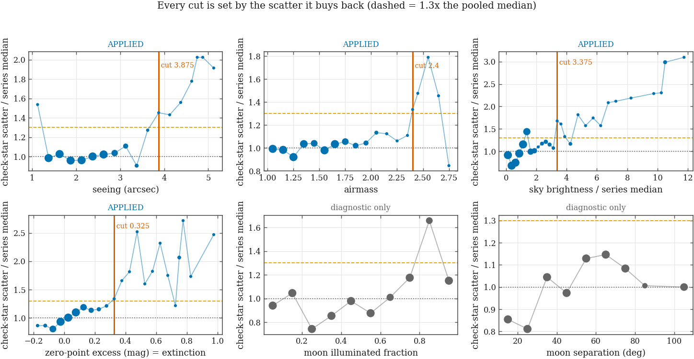
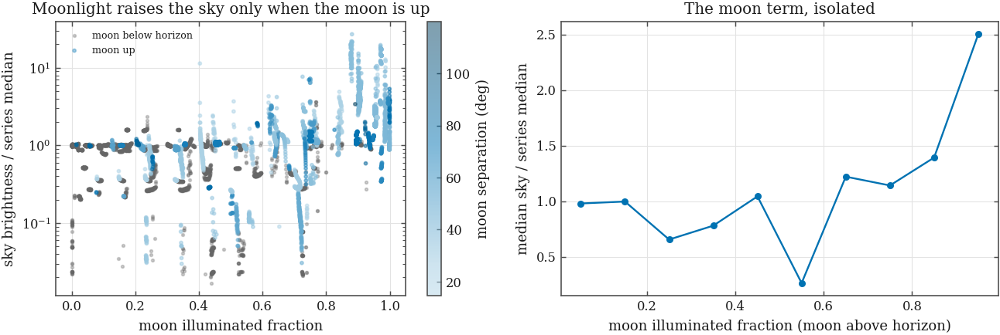
335 frames sampled evenly through every series and re-measured at the pixel level. Median source ellipticity 0.089 (worst frame 0.539); median position-angle coherence 0.783, against the ~0.10 expected for randomly oriented sources. Trailing would show as high ellipticity AND high coherence together.
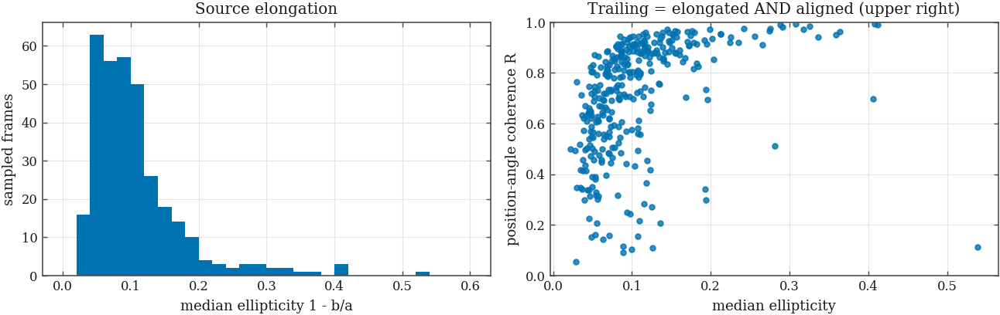
| axis | unit | threshold | baseline (rel. scatter) | frames pass | frames fail | role |
|---|---|---|---|---|---|---|
airmass | airmass | 2.400 | 1.00 | 7,738 | 42 | applied |
fwhm_as | arcsec | 3.875 | 1.00 | 7,638 | 142 | applied |
moon_illum | fraction | no threshold — never degrades | 1.00 | 7,780 | 0 | diagnostic only |
moon_sep | deg | no threshold — never degrades | 1.00 | 7,780 | 0 | diagnostic only |
sky_rate | ADU/px/s | no threshold — never degrades | 1.00 | 7,780 | 0 | diagnostic only |
sky_ratio | x series median | 3.375 | 1.00 | 7,339 | 441 | applied |
zp_excess | mag | 0.325 | 1.00 | 7,250 | 477 | applied |
A bin holding fewer than 15 frames cannot set a threshold: its median fluctuates by tens of percent. But discarding such bins converts “too few frames to test” into “no effect”, and this page published exactly that mistake about airmass — the bins from X = 2.45 to 2.65 sit at 1.48, 1.79 and 1.45× baseline, all three above the degradation factor, all three individually too thin to count. Everything past the last well-populated bin is now pooled into one wide bin whose median is recomputed over the pooled sample, and a well-populated final bin is allowed to set the threshold on its own: the run-of-two rule exists to guard against an interior excursion, and an interior excursion has a neighbour to be confirmed against, while the end of an axis does not.
Frames inside one series are registered by up to four different routes (WCS chain, astroalign triangles, translation vote, and the reference itself), and one of them — the translation vote — was invented during this build and carries 613 frames here. Registration quality and frame depth are confounded (a shallow frame is both harder to align and noisier to measure), so the methods are compared only inside bins of detections per frame.
| method | detections/frame bin | median rel. check-star scatter | frames |
|---|---|---|---|
wcs | 90 | 2.085 | 253 |
astroalign | 185 | 1.207 | 653 |
translation_vote | 185 | 0.984 | 75 |
wcs | 185 | 1.062 | 2,125 |
astroalign | 375 | 1.013 | 1,366 |
translation_vote | 375 | 0.955 | 486 |
wcs | 375 | 0.596 | 538 |
astroalign | 750 | 0.812 | 466 |
translation_vote | 750 | 0.649 | 52 |
astroalign | 1,515 | 0.796 | 170 |
wcs | 1,515 | 1.011 | 826 |
Two consequences carry into §2. First, seeing is not what limits this archive: the median frame is 1.91″ and only 142 frames fail on it. Transparency and moonlit sky do the damage, and both are scheduling problems, not instrument problems. Second — and this is the part that was missing — this cut is now applied to every measurement on the rest of this page. The noise floor, the Allan ladders, the spectral windows, the detection contours and the timing Monte Carlo are all computed on the 6,706 usable frames. In the first version of this build the cut was computed, defended here, and then read by nothing: every later number silently included the 1,074 rejected frames while this section claimed the opposite. §2 tables both numbers side by side so the cut's price is visible rather than asserted.
| series | readout | frames | FWHM p10 | FWHM med | FWHM p90 | X med | X max | moon k | sat. det. frac | usable |
|---|---|---|---|---|---|---|---|---|---|---|
| anuma|e76|g | Mode0 | 451 | 1.86 | 2.21 | 2.70 | 1.05 | 2.21 | 0.05 | 0.017 | 88% |
| anuma|e76|i | Mode0 | 257 | 1.63 | 1.83 | 2.45 | 1.06 | 1.98 | 0.05 | 0.016 | 100% |
| anuma|e76|r | Mode0 | 410 | 1.73 | 2.01 | 2.53 | 1.07 | 2.26 | 0.04 | 0.017 | 87% |
| euuma|e76|g | Mode0 | 221 | 1.77 | 2.19 | 2.76 | 1.07 | 1.32 | 0.53 | 0.013 | 77% |
| euuma|e76|i | Mode0 | 349 | 1.57 | 1.79 | 2.22 | 1.20 | 2.12 | 0.06 | 0.011 | 93% |
| euuma|e76|r | Mode0 | 100 | 1.64 | 1.84 | 2.05 | 1.16 | 2.14 | 0.93 | 0.016 | 99% |
| euuma|e78|g | Fast | 74 | 1.58 | 1.79 | 2.16 | 1.05 | 1.46 | 0.66 | 0.017 | 76% |
| euuma|e80|g | Fast | 134 | 0.61 | 1.66 | 2.60 | 1.18 | 1.85 | 0.63 | 0.014 | 66% |
| stlmi|e47|y | 1MHz High Sensitivity 16-bit | 35 | 1.59 | 1.66 | 1.84 | 1.48 | 2.42 | 0.64 | 0.007 | 57% |
| stlmi|e47|z | 1MHz High Sensitivity 16-bit | 60 | 2.03 | 2.12 | 2.35 | 1.14 | 1.36 | 0.09 | 0.000 | 93% |
| stlmi|e76|g | Mode0 | 745 | 1.65 | 2.07 | 2.76 | 1.10 | 2.29 | 0.16 | 0.041 | 93% |
| stlmi|e76|i | Mode0 | 550 | 1.47 | 1.72 | 2.47 | 1.10 | 2.23 | 0.33 | 0.010 | 89% |
| stlmi|e76|r | Mode0 | 596 | 1.53 | 1.87 | 2.63 | 1.12 | 2.31 | 0.16 | 0.026 | 93% |
| stlmi|e7|G | High Gain | 296 | 1.40 | 1.56 | 1.77 | 1.10 | 2.86 | 0.57 | 0.085 | 76% |
| stlmi|e7|I | High Gain | 340 | 1.42 | 1.52 | 1.74 | 1.11 | 2.69 | 0.45 | 0.070 | 79% |
| stlmi|e7|R | High Gain | 346 | 1.48 | 1.59 | 1.86 | 1.09 | 2.80 | 0.57 | 0.083 | 75% |
| vvpup|e72|g | 1MHz High Sensitivity 16-bit | 196 | 2.33 | 2.89 | 4.41 | 1.66 | 2.01 | 0.11 | 0.008 | 82% |
| vvpup|e72|i | 1MHz High Sensitivity 16-bit | 94 | 2.31 | 2.44 | 3.03 | 1.65 | 2.01 | 0.36 | 0.016 | 93% |
| vvpup|e72|r | 1MHz High Sensitivity 16-bit | 190 | 2.12 | 3.05 | 4.37 | 1.66 | 2.00 | 0.19 | 0.012 | 83% |
| vvpup|e76|g | Mode0 | 359 | 1.78 | 2.11 | 2.52 | 1.62 | 2.42 | 0.23 | 0.008 | 86% |
| vvpup|e76|i | Mode0 | 124 | 1.51 | 1.85 | 2.83 | 1.69 | 2.44 | 0.44 | 0.004 | 79% |
| vvpup|e76|r | Mode0 | 186 | 1.69 | 2.15 | 3.13 | 1.69 | 2.45 | 0.26 | 0.008 | 83% |
| yzcnc|e72|g | 1MHz High Sensitivity 16-bit | 114 | 2.66 | 2.80 | 3.05 | 1.50 | 2.31 | 0.41 | 0.006 | 97% |
| yzcnc|e72|i | 1MHz High Sensitivity 16-bit | 112 | 2.29 | 2.44 | 2.70 | 1.50 | 2.29 | 0.41 | 0.009 | 100% |
| yzcnc|e72|r | 1MHz High Sensitivity 16-bit | 144 | 2.48 | 2.68 | 3.30 | 1.53 | 2.30 | 0.42 | 0.012 | 98% |
| yzcnc|e7|G | High Gain | 431 | 1.62 | 1.86 | 2.17 | 1.07 | 2.81 | 0.90 | 0.066 | 87% |
| yzcnc|e7|I | High Gain | 423 | 1.55 | 1.74 | 2.04 | 1.06 | 2.95 | 0.90 | 0.048 | 81% |
| yzcnc|e7|R | High Gain | 443 | 1.58 | 1.82 | 2.18 | 1.06 | 2.82 | 0.90 | 0.063 | 79% |
Rejection reasons: zp_excess ×456, sky_ratio ×399, fwhm_as ×118, sky_ratio,zp_excess ×35, airmass ×23, fwhm_as,zp_excess ×20, airmass,zp_excess ×16, fwhm_as,sky_ratio,zp_excess ×2, fwhm_as,sky_ratio ×2, airmass,sky_ratio ×2, airmass,sky_ratio,zp_excess ×1.
Photon statistics predict a scatter that falls as stars get brighter. Real photometry stops improving somewhere. Where, and what is the flat part made of? The answer sets every detection limit downstream, so it has to be measured rather than asserted — and the S2 detector work gives us the pieces to predict what it should be.
The variance of an aperture sum is
F/g + n_pix σbkg2 +
(n_pix2/n_sky) σbkg2. The sky,
read and dark terms come from each frame's own measured background
RMS, so they carry no assumption; only the source term needs the gain. S2
measured the gain to lie between 0.6 and
1.77 e−/ADU with the header EGAIN
1.057 inside the bracket — so the prediction is
drawn as a band spanning that bracket, and no single gain is quoted as if it
were known. Read noise 3.93 ADU per High Gain read
(4.15 ± 2.3 e−); StackPro frames
are sums of 16 sub-reads, which needs no special case here
because their extra read noise is already inside the measured background
RMS.
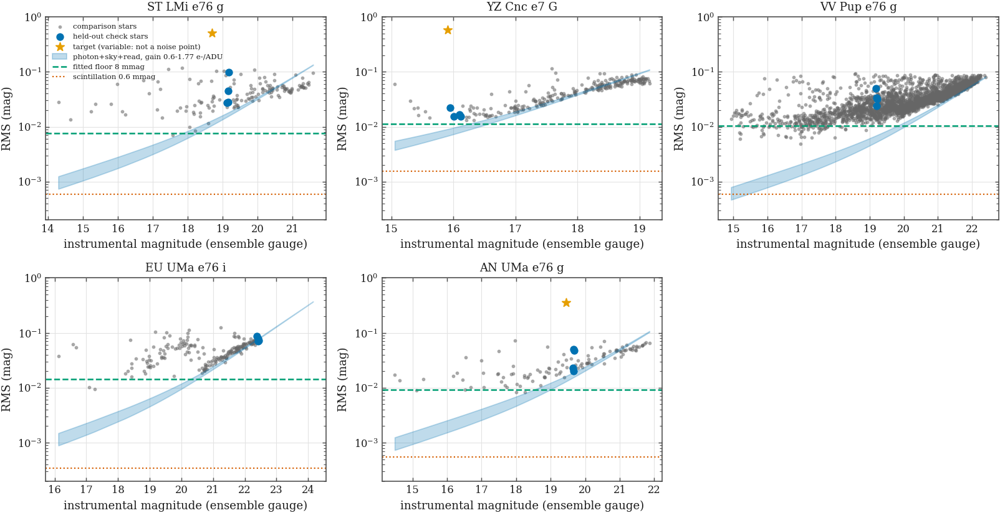
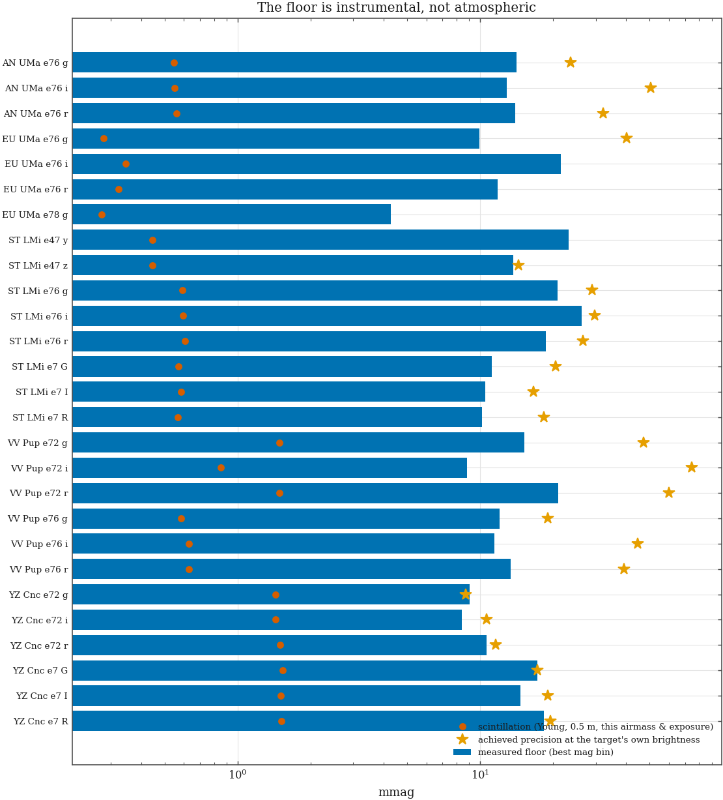
Two independent tests. The χ2 inflation factor asks whether the formal per-point errors, multiplied by that factor, make a constant star's χ2ν equal 1. The Allan deviation asks whether averaging still buys √N: white noise falls as τ−1/2, correlated noise flattens.
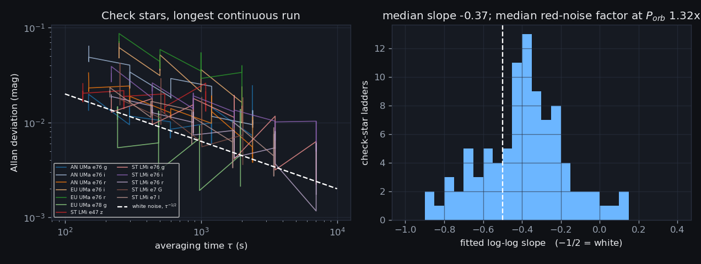
Both of these estimators are compared against the wrong thing if they are compared against textbook values. A ladder here has 4–6 rungs over about one decade with as few as three pairs at the top, and its white-noise expectation is -0.55 with a 5–95% range of [-0.85, -0.31] — not −0.50. Every ladder therefore carries its own null, generated at its own length and cadence, and the verdict below is per-ladder. Likewise the red-noise factor is quoted at the largest τ the ladder actually reaches, which is a median 0.37 of the orbital period: 0 of 92 ladders reach Porb itself, so a number labelled “at Porb” would be a lower bound wearing a larger name (red noise grows with τ).
Every honest-noise number on this page comes from at most four held-out check stars, and they are not a random four: they are the survivors of the comparison-star stability iteration, drawn nearest the target's brightness. Survivors of a scatter cut could easily be quieter than the population they were drawn from, which would make every precision number on this page optimistic. Tested directly — the median RMS of every star within 0.25 mag of the target, including the ones the stability cut dropped and the ones never selected at all, against the check stars' own median — the ratio is 0.96 over 24 series (range 0.49–1.83). The check stars are if anything marginally noisier than magnitude-matched field stars, so the selection does not buy an optimistic answer.
| series | readout | texp (s) | frames used/matched | stars | floor (mmag) | at mag | fitted floor | k [gain bracket] | scint. (mmag) | floor/scint | target mag | precision at target (mmag) | same, uncut | n near | inflation | χ2ν | target pts | note |
|---|---|---|---|---|---|---|---|---|---|---|---|---|---|---|---|---|---|---|
| anuma|e76|g | Mode0 | 60 | 397/451 | 115 | 14.1 | 18.2 | 9.3 | 1.40 [1.15–1.57] | 0.55 | 26 | 19.44 | 23.6 | 29.0 | 25 | 2.59 | 6.73 | 425 | |
| anuma|e76|i | Mode0 | 60 | 256/257 | 129 | 12.9 | 17.8 | 9.7 | 0.86 [0.74–0.94] | 0.55 | 23 | 20.92 | 50.5 | 50.6 | 38 | 1.14 | 1.30 | 253 | |
| anuma|e76|r | Mode0 | 60 | 355/410 | 131 | 14.0 | 17.8 | 8.5 | 0.92 [0.81–0.98] | 0.56 | 25 | 20.13 | 32.2 | 33.4 | 28 | 1.14 | 1.30 | 366 | |
| euuma|e76|g | Mode0 | 240 | 171/221 | 126 | 9.9 | 18.2 | 10.8 | 1.99 [1.76–2.14] | 0.28 | 35 | 21.78 | 40.1 | 44.2 | 26 | 1.07 | 1.14 | 172 | k outside the gain bracket |
| euuma|e76|i | Mode0 | 240 | 325/349 | 190 | 21.6 | 18.2 | 14.3 | 1.20 [1.04–1.30] | 0.35 | 62 | 24.16 | — | — | 0 | 0.98 | 0.97 | 24 | target fainter than every comparison star |
| euuma|e76|r | Mode0 | 240 | 99/100 | 166 | 11.8 | 19.2 | 6.1 | 1.69 [1.47–1.82] | 0.32 | 36 | 22.90 | — | — | 0 | 0.92 | 0.84 | 45 | target fainter than every comparison star |
| euuma|e78|g | Fast | 240 | 56/74 | 49 | 4.3 | 18.2 | 1.6 | 0.94 [0.73–1.11] | 0.27 | 16 | — | — | — | 0 | 1.10 | 1.22 | 0 | no target tie |
| euuma|e80|g | Fast | 240 | 89/134 | 6 | — | — | 4.5 | 1.00 [0.75–1.20] | 0.34 | — | — | — | — | 0 | 0.72 | 0.52 | 0 | no target tie |
| stlmi|e47|y | 1MHz High Sensitivity 16-bit | 300 | 20/35 | 41 | 23.1 | 20.8 | 2.5 | 1.31 [1.15–1.41] | 0.45 | 52 | — | — | — | 0 | 1.20 | 1.44 | 0 | no target tie |
| stlmi|e47|z | 1MHz High Sensitivity 16-bit | 120 | 56/60 | 65 | 13.7 | 20.2 | 1.7 | 0.71 [0.50–0.91] | 0.44 | 31 | 20.46 | 14.4 | 14.3 | 26 | 1.15 | 1.33 | 57 | |
| stlmi|e76|g | Mode0 | 60 | 692/745 | 145 | 20.9 | 17.8 | 7.6 | 1.27 [1.15–1.34] | 0.59 | 35 | 18.70 | 29.0 | 36.9 | 27 | 1.95 | 3.82 | 720 | |
| stlmi|e76|i | Mode0 | 60 | 491/550 | 131 | 26.2 | 19.2 | 10.3 | 1.30 [1.10–1.43] | 0.60 | 44 | 19.81 | 29.7 | 36.2 | 30 | 1.68 | 2.81 | 513 | |
| stlmi|e76|r | Mode0 | 60 | 554/596 | 162 | 18.6 | 18.2 | 10.0 | 1.21 [1.08–1.28] | 0.61 | 31 | 19.25 | 26.5 | 27.0 | 28 | 1.16 | 1.34 | 568 | |
| stlmi|e7|G | High Gain | 64 | 224/296 | 172 | 11.2 | 17.8 | 7.8 | 1.09 [0.98–1.16] | 0.57 | 20 | 19.37 | 20.4 | 32.2 | 52 | 1.75 | 3.07 | 278 | |
| stlmi|e7|I | High Gain | 64 | 268/340 | 253 | 10.5 | 18.2 | 7.9 | 0.88 [0.79–0.93] | 0.59 | 18 | 19.00 | 16.6 | 32.3 | 46 | 1.08 | 1.17 | 315 | |
| stlmi|e7|R | High Gain | 64 | 259/346 | 238 | 10.2 | 17.8 | 8.8 | 0.96 [0.87–1.01] | 0.57 | 18 | 18.98 | 18.3 | 28.6 | 49 | 1.16 | 1.34 | 308 | |
| vvpup|e72|g | 1MHz High Sensitivity 16-bit | 40 | 160/196 | 1,818 | 15.3 | 18.2 | 9.9 | 0.81 [0.72–0.87] | 1.48 | 10 | 20.23 | 47.3 | 50.3 | 545 | 1.35 | 1.83 | 194 | |
| vvpup|e72|i | 1MHz High Sensitivity 16-bit | 120 | 87/94 | 2,229 | 8.8 | 16.8 | 7.5 | 1.77 [1.61–1.86] | 0.86 | 10 | 20.91 | 74.6 | 76.8 | 815 | 1.48 | 2.18 | 75 | k outside the gain bracket |
| vvpup|e72|r | 1MHz High Sensitivity 16-bit | 40 | 157/190 | 1,960 | 21.0 | 15.8 | 19.5 | 0.77 [0.71–0.80] | 1.48 | 14 | 20.32 | 60.1 | 63.8 | 664 | 1.25 | 1.57 | 180 | |
| vvpup|e76|g | Mode0 | 240 | 308/359 | 2,690 | 12.0 | 16.8 | 10.4 | 2.92 [2.47–3.22] | 0.58 | 21 | 18.32 | 19.1 | 24.1 | 267 | 3.01 | 9.04 | 323 | k outside the gain bracket |
| vvpup|e76|i | Mode0 | 240 | 98/124 | 1,561 | 11.5 | 17.2 | 7.1 | 24.68 [18.11–30.35] | 0.63 | 18 | 22.19 | 44.5 | 44.8 | 142 | 1.41 | 2.00 | 51 | k outside the gain bracket |
| vvpup|e76|r | Mode0 | 240 | 154/186 | 2,229 | 13.4 | 15.8 | 12.2 | 1.70 [1.48–1.84] | 0.63 | 21 | 21.04 | 39.2 | 41.8 | 759 | 1.11 | 1.24 | 143 | k outside the gain bracket |
| yzcnc|e72|g | 1MHz High Sensitivity 16-bit | 30 | 111/114 | 232 | 9.1 | 16.8 | 5.4 | 1.14 [0.91–1.30] | 1.44 | 6 | 16.85 | 8.7 | 8.8 | 34 | 1.12 | 1.26 | 114 | |
| yzcnc|e72|i | 1MHz High Sensitivity 16-bit | 30 | 112/112 | 268 | 8.4 | 16.2 | 5.1 | 1.15 [0.96–1.28] | 1.43 | 6 | 17.43 | 10.6 | 10.6 | 44 | 1.11 | 1.23 | 112 | |
| yzcnc|e72|r | 1MHz High Sensitivity 16-bit | 30 | 141/144 | 271 | 10.6 | 16.2 | 6.5 | 1.19 [0.98–1.32] | 1.50 | 7 | 16.88 | 11.6 | 11.6 | 38 | 1.32 | 1.75 | 144 | |
| yzcnc|e7|G | High Gain | 8 | 375/431 | 241 | 17.2 | 16.2 | 11.3 | 1.10 [1.00–1.15] | 1.54 | 11 | 15.91 | 17.2 | 20.6 | 20 | 1.67 | 2.80 | 431 | |
| yzcnc|e7|I | High Gain | 8 | 341/423 | 271 | 14.7 | 15.8 | 10.9 | 1.13 [1.02–1.20] | 1.51 | 10 | 16.97 | 19.0 | 22.0 | 54 | 1.40 | 1.96 | 423 | |
| yzcnc|e7|R | High Gain | 8 | 350/443 | 295 | 18.3 | 15.8 | 13.7 | 1.03 [0.95–1.08] | 1.51 | 12 | 16.25 | 19.5 | 29.2 | 42 | 2.36 | 5.58 | 442 |
k has median 1.15 over all 28
series, and 22 of 28 fall inside the range the gain
bracket allows. The 6 that do not are named in the table
and are a model failure, not an average to be taken:
euuma|e76|r (1.69), vvpup|e76|r (1.70), vvpup|e72|i (1.77), euuma|e76|g (1.99), vvpup|e76|g (2.92), vvpup|e76|i (24.68). Note also what
the gain bracket is and is not worth here: swinging the gain across its
entire 3.0× range moves
k by a median of only 19%, because the
fit takes its leverage from the faint end where sky and read noise dominate
— so the bracket is propagated honestly but it is not the
dominant uncertainty in the prediction. Averaging is not free:
31 of 92 ladders have a slope above their own
95th-percentile white null and 27 exceed it on the red-noise
factor, median penalty 1.32× at a median
0.37 Porb. The median slope
(-0.37) is inside the null band, so it is the
per-ladder tests and not the median that carry this conclusion.Achieved per-point precision at each target's own brightness: AN UMa 24–50 mmag, EU UMa 40–40 mmag, ST LMi 14–30 mmag, VV Pup 19–75 mmag, YZ Cnc 9–19 mmag. These are the numbers every later section uses; they are measured on held-out check stars of the same brightness as the target in the same frames, so they already contain the flat field, the ensemble solution and the weather — and they are measured on the quality-cut frames only. The table gives the uncut number beside each one: the cut improves the median series by 1.07× and the best by 1.95×, which is what §1's cut is worth and what the first version of this page never actually collected. Two structural facts travel with them: the magnitude scale is the ensemble's own arbitrary gauge (see §6, row S1), and error bars must be inflated and long-timescale averages penalised by the factors tabled above.
Precision is worthless at a period the sampling cannot
distinguish from its alias. Before any periodogram is read, the sampling's
own transform — the spectral window
|Σ e−2πift|2/N2
— has to be looked at, because every peak in a real periodogram is the
truth convolved with it.
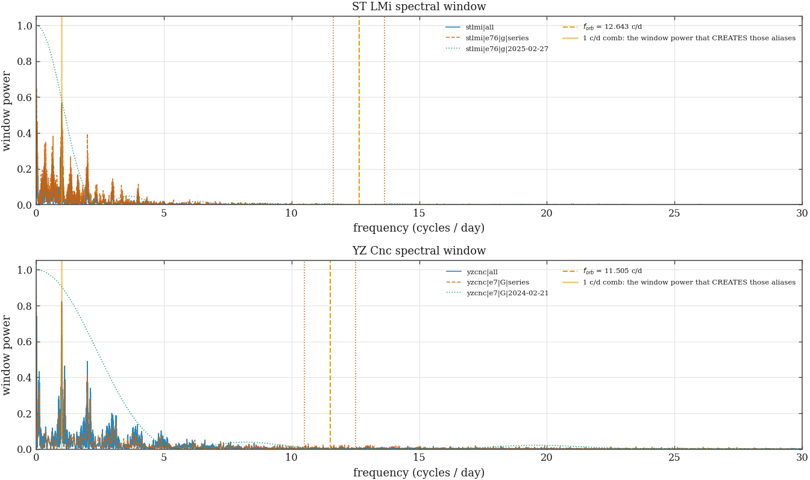
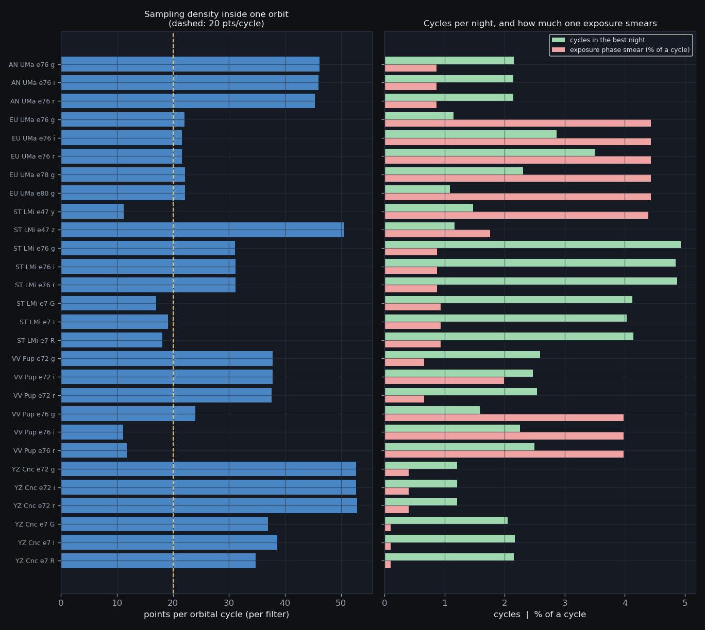
| scope | alias family | max |k|=1 window power | baseline (d) | resolution (c/d) | alias resolved? |
|---|---|---|---|---|---|
| anuma|all | sidereal day | 0.847 | 382.02 | 0.0026 | yes |
| anuma|all | solar day | 0.674 | 382.02 | 0.0026 | yes |
| anuma|e76|g|2025-03-30 | sidereal day | 0.903 | 0.17 | 5.8266 | no — one broad peak |
| anuma|e76|g|2025-03-30 | solar day | 0.904 | 0.17 | 5.8266 | no — one broad peak |
| anuma|e76|g|series | sidereal day | 0.863 | 382.02 | 0.0026 | yes |
| anuma|e76|g|series | solar day | 0.656 | 382.02 | 0.0026 | yes |
| euuma|all | sidereal day | 0.844 | 509.73 | 0.0020 | yes |
| euuma|all | solar day | 0.694 | 509.73 | 0.0020 | yes |
| euuma|e76|i|2025-05-09 | sidereal day | 0.895 | 0.18 | 5.5827 | no — one broad peak |
| euuma|e76|i|2025-05-09 | solar day | 0.895 | 0.18 | 5.5827 | no — one broad peak |
| euuma|e76|i|series | sidereal day | 0.921 | 139.71 | 0.0072 | yes |
| euuma|e76|i|series | solar day | 0.845 | 139.71 | 0.0072 | yes |
| stlmi|all | sidereal day | 0.761 | 740.13 | 0.0014 | yes |
| stlmi|all | solar day | 0.566 | 740.13 | 0.0014 | yes |
| stlmi|e76|g|2025-02-27 | sidereal day | 0.582 | 0.39 | 2.5609 | no — one broad peak |
| stlmi|e76|g|2025-02-27 | solar day | 0.584 | 0.39 | 2.5609 | no — one broad peak |
| stlmi|e76|g|series | sidereal day | 0.773 | 396.05 | 0.0025 | yes |
| stlmi|e76|g|series | solar day | 0.536 | 396.05 | 0.0025 | yes |
| vvpup|all | sidereal day | 0.905 | 433.94 | 0.0023 | yes |
| vvpup|all | solar day | 0.512 | 433.94 | 0.0023 | yes |
| vvpup|e76|g|2025-11-24 | sidereal day | 0.953 | 0.11 | 9.0460 | no — one broad peak |
| vvpup|e76|g|2025-11-24 | solar day | 0.954 | 0.11 | 9.0460 | no — one broad peak |
| vvpup|e76|g|series | sidereal day | 0.928 | 370.03 | 0.0027 | yes |
| vvpup|e76|g|series | solar day | 0.553 | 370.03 | 0.0027 | yes |
| yzcnc|all | sidereal day | 0.773 | 92.94 | 0.0108 | yes |
| yzcnc|all | solar day | 0.796 | 92.94 | 0.0108 | yes |
| yzcnc|e7|G|2024-02-21 | sidereal day | 0.903 | 0.18 | 5.5997 | no — one broad peak |
| yzcnc|e7|G|2024-02-21 | solar day | 0.904 | 0.18 | 5.5997 | no — one broad peak |
| yzcnc|e7|G|series | sidereal day | 0.806 | 46.00 | 0.0217 | yes |
| yzcnc|e7|G|series | solar day | 0.809 | 46.00 | 0.0217 | yes |
Two sampling limits carry into §4. The per-filter cadence, not the exposure time, sets the points per cycle; and the exposure smears phase by a median 0.9% of a cycle, rising to 4.4% on EU UMa's 240 s exposures — a floor on any timing or edge-shape claim for that target, independent of signal-to-noise.
| series | pts | nights | baseline (d) | median Δt (s) | pts/cycle | longest run (h) | best night | pts | cycles | phase cov. | Δt (s) | full-orbit nights | smear (% cycle) | largest gap (d) | duty cycle |
|---|---|---|---|---|---|---|---|---|---|---|---|---|---|---|---|
| anuma|e76|g | 397 | 10 | 382.0 | 149 | 46 | 5.19 | 2025-03-30 | 86 | 2.2 | 100% | 149 | 9 | 0.9% | 240.1 | 0.37% |
| anuma|e76|i | 256 | 8 | 347.1 | 150 | 46 | 5.19 | 2025-03-29 | 87 | 2.1 | 100% | 150 | 6 | 0.9% | 239.2 | 0.30% |
| anuma|e76|r | 355 | 11 | 347.1 | 152 | 45 | 5.48 | 2025-03-29 | 84 | 2.1 | 100% | 150 | 9 | 0.9% | 235.1 | 0.42% |
| euuma|e76|g | 171 | 9 | 431.9 | 245 | 22 | 3.50 | 2026-03-16 | 25 | 1.1 | 100% | 245 | 7 | 4.4% | 224.2 | 0.14% |
| euuma|e76|i | 325 | 11 | 139.7 | 250 | 22 | 4.30 | 2025-05-09 | 60 | 2.9 | 100% | 250 | 8 | 4.4% | 100.8 | 0.76% |
| euuma|e76|r | 99 | 4 | 127.6 | 250 | 22 | 5.26 | 2025-05-14 | 70 | 3.5 | 100% | 250 | 2 | 4.4% | 105.8 | 0.28% |
| euuma|e78|g | 56 | 2 | 1.2 | 244 | 22 | 3.47 | 2026-03-26 | 40 | 2.3 | 100% | 244 | 2 | 4.4% | 1.0 | 17.64% |
| euuma|e80|g | 89 | 7 | 39.0 | 244 | 22 | 2.97 | 2026-05-06 | 23 | 1.1 | 100% | 243 | 3 | 4.4% | 12.0 | 1.01% |
| stlmi|e47|y | 20 | 1 | 0.1 | 611 | 11 | 2.80 | 2024-04-16 | 20 | 1.5 | 75% | 611 | 1 | 4.4% | 0.0 | 100.00% |
| stlmi|e47|z | 56 | 1 | 0.1 | 135 | 50 | 2.22 | 2024-04-10 | 56 | 1.2 | 100% | 135 | 1 | 1.8% | 0.0 | 100.00% |
| stlmi|e76|g | 692 | 16 | 396.0 | 220 | 31 | 9.37 | 2025-02-27 | 152 | 4.9 | 100% | 219 | 14 | 0.9% | 217.2 | 0.63% |
| stlmi|e76|i | 491 | 10 | 119.9 | 219 | 31 | 9.21 | 2025-02-27 | 138 | 4.9 | 100% | 219 | 8 | 0.9% | 58.6 | 1.38% |
| stlmi|e76|r | 554 | 13 | 119.8 | 220 | 31 | 9.25 | 2025-02-27 | 141 | 4.9 | 100% | 219 | 10 | 0.9% | 58.6 | 1.67% |
| stlmi|e7|G | 224 | 14 | 33.2 | 402 | 17 | 7.84 | 2024-03-03 | 65 | 4.1 | 100% | 254 | 10 | 0.9% | 10.7 | 5.80% |
| stlmi|e7|I | 268 | 15 | 33.2 | 358 | 19 | 7.67 | 2024-03-03 | 92 | 4.0 | 100% | 214 | 12 | 0.9% | 10.7 | 6.00% |
| stlmi|e7|R | 259 | 14 | 33.1 | 378 | 18 | 7.86 | 2024-03-03 | 75 | 4.1 | 100% | 251 | 11 | 0.9% | 10.7 | 5.57% |
| vvpup|e72|g | 160 | 3 | 33.1 | 160 | 38 | 4.33 | 2024-12-03 | 100 | 2.6 | 100% | 160 | 2 | 0.7% | 27.9 | 1.14% |
| vvpup|e72|i | 87 | 1 | 0.2 | 160 | 38 | 4.13 | 2024-12-06 | 87 | 2.5 | 100% | 160 | 1 | 2.0% | 0.0 | 100.00% |
| vvpup|e72|r | 157 | 4 | 35.0 | 160 | 38 | 4.24 | 2024-12-04 | 97 | 2.5 | 100% | 160 | 2 | 0.7% | 28.9 | 1.05% |
| vvpup|e76|g | 308 | 14 | 370.0 | 251 | 24 | 4.33 | 2025-11-24 | 52 | 1.6 | 90% | 124 | 10 | 4.0% | 216.2 | 0.41% |
| vvpup|e76|i | 98 | 9 | 101.8 | 540 | 11 | 3.78 | 2025-03-03 | 24 | 2.3 | 100% | 540 | 4 | 4.0% | 42.8 | 0.63% |
| vvpup|e76|r | 154 | 11 | 98.8 | 510 | 12 | 4.60 | 2025-02-22 | 29 | 2.5 | 90% | 510 | 6 | 4.0% | 42.9 | 1.05% |
| yzcnc|e72|g | 111 | 2 | 1.1 | 142 | 53 | 2.52 | 2024-05-01 | 60 | 1.2 | 100% | 144 | 1 | 0.4% | 0.9 | 16.73% |
| yzcnc|e72|i | 112 | 2 | 1.1 | 142 | 53 | 2.52 | 2024-05-01 | 62 | 1.2 | 100% | 144 | 1 | 0.4% | 0.9 | 16.61% |
| yzcnc|e72|r | 141 | 3 | 2.1 | 142 | 53 | 2.52 | 2024-05-01 | 61 | 1.2 | 100% | 144 | 1 | 0.4% | 0.9 | 11.62% |
| yzcnc|e7|G | 375 | 21 | 46.0 | 203 | 37 | 7.06 | 2024-02-21 | 72 | 2.1 | 100% | 193 | 9 | 0.1% | 8.0 | 4.45% |
| yzcnc|e7|I | 341 | 17 | 46.0 | 194 | 39 | 6.96 | 2024-02-21 | 91 | 2.2 | 100% | 191 | 8 | 0.1% | 8.8 | 4.12% |
| yzcnc|e7|R | 350 | 19 | 46.0 | 216 | 35 | 6.68 | 2024-02-21 | 68 | 2.2 | 100% | 193 | 10 | 0.1% | 12.9 | 5.08% |
“We measure 25 mmag scatter” is not a science statement. “We can detect a 30 mmag modulation at 1.9 h” is. Converting one into the other requires the real timestamps (so the window enters), the real noise (so correlated systematics enter) and a false-alarm threshold measured the same way (so a red archive cannot borrow a white threshold).
Sinusoids of known semi-amplitude are injected at the real BJD_TDB timestamps into real check-star residual series, cyclically rolled so their autocorrelation survives, and recovered with a floating-mean Lomb–Scargle against a 1%-FAP threshold measured by 300 signal-free trials through the same machinery (50 injection trials per grid cell).
This is the correction that matters most on this page. The first version scored a trial as recovered only if the tallest peak cleared the threshold and landed within 1% of the injected frequency. On a whole season that is a reasonable test of a blind period search. On a single night it is not a detection test at all: the frequency resolution of a 3–5 hour run is 2.6–9.0 c/d while the acceptance window is 0.12–0.14 c/d — twenty to seventy times narrower than the peak itself. A 300 mmag injection into VV Pup's richest night cleared the threshold in forty trials out of forty and was scored recovered in twenty-five, and the resulting “never reached even at 300 mmag” was published as a detection limit and fed into two verdicts.
Both questions are now measured and labelled. score = period is the blind search: tallest peak in the band, against a threshold built from the distribution of the tallest peak, and it must land on the right frequency. score = known is the question this paper actually asks — every one of these five CVs has a published orbital period with a decades-long baseline — so the statistic is the power at that frequency against the distribution of the power at that same frequency in signal-free data. Each is compared against its own null; using the maximum-statistic threshold for a known-period claim charges a look-elsewhere penalty the paper does not owe.
Three regimes, because they answer different questions. season is the whole richest series untouched — what a blind period search sees, nightly zero-point wander and all. season-dt is the same set after per-night mean removal, the detrending the strategy requires (§4.20); the pair measures what that detrending is worth and what it costs at long periods. night is the richest single night, and its contour is what a single-night, cycle-resolved claim — the claim this paper is built on — can rest on.
Two limits of the machinery, stated rather than hidden. The contour is interpolated between grid cells of 50 trials each, so at a recovery fraction of 0.9 a single cell carries a binomial standard error of about 4%; each A90 below is therefore quoted with the 16–84% range from resampling those cells. And the threshold rests on a median of 4 check stars: measured one star at a time, the per-star thresholds spread by a median 77% of the pooled value, which is the honest uncertainty on it rather than the ±1% a bootstrap over trials reports.
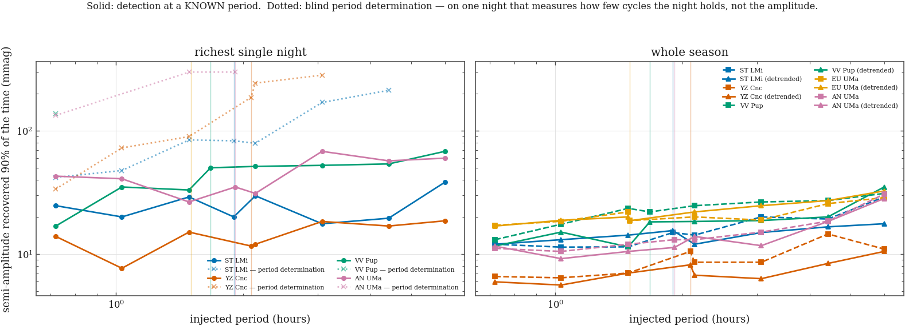
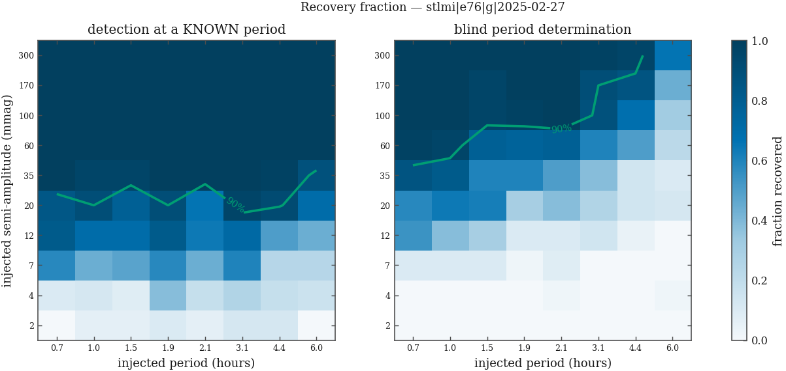
| series | regime | score | P (h) | N points | cycles covered | per-point σ (mmag) | measured A90 (mmag) | analytic Amin = σ√(4z/N) (mmag) | measured / analytic |
|---|---|---|---|---|---|---|---|---|---|
| anuma|e76|g | night | known | 1.914 | 86 | 2.2 | 17.0 | 35.0 [30–41] | 15.6 | 2.3 |
| anuma|e76|g | season | known | 1.914 | 397 | 4,790.0 | 35.0 | 13.1 [11–15] | 14.9 | 0.9 |
| anuma|e76|g | season-dt | known | 1.914 | 397 | 4,790.0 | 35.0 | 11.3 [10–13] | 14.9 | 0.8 |
| anuma|e76|g | night | period | 1.914 | 86 | 2.2 | 17.0 | 300.0 [226–300] | 15.6 | 19.3 |
| anuma|e76|g | season | period | 1.914 | 397 | 4,790.0 | 35.0 | 54.1 [53–55] | 14.9 | 3.6 |
| anuma|e76|g | season-dt | period | 1.914 | 397 | 4,790.0 | 35.0 | 33.3 [32–35] | 14.9 | 2.2 |
| euuma|e76|i | season | known | 1.502 | 325 | 2,232.9 | 74.8 | 18.7 [18–19] | 35.2 | 0.5 |
| euuma|e76|i | season-dt | known | 1.502 | 325 | 2,232.9 | 74.8 | 18.6 [18–19] | 35.2 | 0.5 |
| euuma|e76|i | season | period | 1.502 | 325 | 2,232.9 | 74.8 | 54.4 [51–60] | 35.2 | 1.5 |
| euuma|e76|i | season-dt | period | 1.502 | 325 | 2,232.9 | 74.8 | 54.8 [51–60] | 35.2 | 1.6 |
| stlmi|e76|g | night | known | 1.898 | 152 | 4.9 | 20.0 | 20.0 [15–23] | 13.7 | 1.5 |
| stlmi|e76|g | season | known | 1.898 | 692 | 5,007.1 | 36.0 | 14.9 [13–16] | 11.6 | 1.3 |
| stlmi|e76|g | season-dt | known | 1.898 | 692 | 5,007.1 | 36.0 | 15.5 [14–17] | 11.6 | 1.3 |
| stlmi|e76|g | night | period | 1.898 | 152 | 4.9 | 20.0 | 83.0 [77–88] | 13.7 | 6.0 |
| stlmi|e76|g | season | period | 1.898 | 692 | 5,007.1 | 36.0 | 50.8 [48–53] | 11.6 | 4.4 |
| stlmi|e76|g | season-dt | period | 1.898 | 692 | 5,007.1 | 36.0 | 32.6 [29–39] | 11.6 | 2.8 |
| vvpup|e76|g | night | known | 1.673 | 52 | 1.6 | 15.2 | 50.1 [35–65] | 17.9 | 2.8 |
| vvpup|e76|g | season | known | 1.673 | 308 | 5,307.3 | 32.8 | 22.0 [19–25] | 15.8 | 1.4 |
| vvpup|e76|g | season-dt | known | 1.673 | 308 | 5,307.3 | 32.8 | 18.2 [17–20] | 15.8 | 1.2 |
| vvpup|e76|g | night | period | 1.673 | 52 | 1.6 | 15.2 | not reached | 17.9 | — |
| vvpup|e76|g | season | period | 1.673 | 308 | 5,307.3 | 32.8 | 60.0 [57–69] | 15.8 | 3.8 |
| vvpup|e76|g | season-dt | period | 1.673 | 308 | 5,307.3 | 32.8 | 77.5 [60–92] | 15.8 | 4.9 |
| yzcnc|e7|G | night | known | 2.086 | 72 | 2.1 | 14.1 | 11.6 [11–13] | 14.1 | 0.8 |
| yzcnc|e7|G | season | known | 2.086 | 375 | 529.2 | 16.0 | 10.5 [10–11] | 7.0 | 1.5 |
| yzcnc|e7|G | season-dt | known | 2.086 | 375 | 529.2 | 16.0 | 8.2 [7–9] | 7.0 | 1.2 |
| yzcnc|e7|G | night | period | 2.086 | 72 | 2.1 | 14.1 | 186.9 [159–210] | 14.1 | 13.3 |
| yzcnc|e7|G | season | period | 2.086 | 375 | 529.2 | 16.0 | 18.9 [18–20] | 7.0 | 2.7 |
| yzcnc|e7|G | season-dt | period | 2.086 | 375 | 529.2 | 16.0 | 17.9 [17–20] | 7.0 | 2.6 |
§3 measures how much window power the daily comb makes available at f ± k c/d. That is the input to the alias question, not the answer: whether the alias beats the truth depends on the signal's amplitude and on how many nights there are. Measured here, with the same injections and the same real noise, classifying the tallest peak as the truth, a ±k c/d alias, or neither:
| injected semi-amplitude | tallest peak is the truth | … is a ±k c/d alias |
|---|---|---|
| 50 | 96% | 4% |
| 100 | 99% | 0% |
| 500 | 100% | 0% |
| 1,000 | 100% | 0% |
σ√(4z/N) the
strategy document uses by a factor of
0.5–2.8
— and note that range spans 1 in both directions. The formula is
conservative at a known period, because its z charges
a blind-search look-elsewhere penalty this paper does not owe; it is
optimistic when a period genuinely has to be found, where the
measured limit is
1.5–4.9×
worse than the formula on the multi-night sets. One expression that errs by
two to five times in opposite directions depending on which question is
asked is not a detection limit: it assumes white noise, an alias-free
window and one fixed z, and this archive supplies none of the
three. What must not be quoted at all is the single-night
period-determination contour
(6.0–19.3×)
as though it were a detection limit — those rows, greyed above, measure
how few cycles one night holds. Every detection limit in the manuscript
must be the injection number under a named score mode, not the
formula. Per-night detrending buys a factor 0.96–1.28 at the orbital period (median 1.16) — measured, not assumed. And on alias confusion the measurement is
reassuring: at the amplitudes these polars actually show, the tallest peak
lands on the true frequency in essentially every trial.The polars' orbital modulations (0.5–2 mag) and YZ Cnc's superhumps (0.1–0.3 mag) sit one to two orders of magnitude above these contours: detection is never the binding constraint for the headline science. What binds is precision on a colour point and epoch precision on an edge — which is why §5 exists.
| series | regime | score | P (h) | A90 (mmag) | N | σ (mmag) |
|---|---|---|---|---|---|---|
| anuma|e76|g | night | known | 0.720 | 42.8 | 86 | 17.0 |
| anuma|e76|g | night | known | 1.032 | 40.8 | 86 | 17.0 |
| anuma|e76|g | night | known | 1.488 | 26.5 | 86 | 17.0 |
| anuma|e76|g | night | known | 1.914 | 35.0 | 86 | 17.0 |
| anuma|e76|g | night | known | 2.136 | 31.0 | 86 | 17.0 |
| anuma|e76|g | night | known | 3.072 | 68.2 | 86 | 17.0 |
| anuma|e76|g | night | known | 4.416 | 57.1 | 86 | 17.0 |
| anuma|e76|g | night | known | 6.000 | 60.0 | 86 | 17.0 |
| anuma|e76|g | season | known | 0.720 | 11.1 | 397 | 35.0 |
| anuma|e76|g | season | known | 1.032 | 10.5 | 397 | 35.0 |
| anuma|e76|g | season | known | 1.488 | 12.0 | 397 | 35.0 |
| anuma|e76|g | season | known | 1.914 | 13.1 | 397 | 35.0 |
| anuma|e76|g | season | known | 2.136 | 13.1 | 397 | 35.0 |
| anuma|e76|g | season | known | 3.072 | 15.1 | 397 | 35.0 |
| anuma|e76|g | season | known | 4.416 | 18.5 | 397 | 35.0 |
| anuma|e76|g | season | known | 6.000 | 30.6 | 397 | 35.0 |
| anuma|e76|g | season-dt | known | 0.720 | 11.6 | 397 | 35.0 |
| anuma|e76|g | season-dt | known | 1.032 | 9.2 | 397 | 35.0 |
| anuma|e76|g | season-dt | known | 1.488 | 10.5 | 397 | 35.0 |
| anuma|e76|g | season-dt | known | 1.914 | 11.3 | 397 | 35.0 |
| anuma|e76|g | season-dt | known | 2.136 | 13.9 | 397 | 35.0 |
| anuma|e76|g | season-dt | known | 3.072 | 11.7 | 397 | 35.0 |
| anuma|e76|g | season-dt | known | 4.416 | 18.4 | 397 | 35.0 |
| anuma|e76|g | season-dt | known | 6.000 | 28.2 | 397 | 35.0 |
| anuma|e76|g | night | period | 0.720 | 133.6 | 86 | 17.0 |
| anuma|e76|g | night | period | 1.032 | — | 86 | 17.0 |
| anuma|e76|g | night | period | 1.488 | 300.0 | 86 | 17.0 |
| anuma|e76|g | night | period | 1.914 | 300.0 | 86 | 17.0 |
| anuma|e76|g | night | period | 2.136 | — | 86 | 17.0 |
| anuma|e76|g | night | period | 3.072 | — | 86 | 17.0 |
| anuma|e76|g | night | period | 4.416 | — | 86 | 17.0 |
| anuma|e76|g | night | period | 6.000 | — | 86 | 17.0 |
| anuma|e76|g | season | period | 0.720 | 53.6 | 397 | 35.0 |
| anuma|e76|g | season | period | 1.032 | 53.4 | 397 | 35.0 |
| anuma|e76|g | season | period | 1.488 | 53.9 | 397 | 35.0 |
| anuma|e76|g | season | period | 1.914 | 54.1 | 397 | 35.0 |
| anuma|e76|g | season | period | 2.136 | 52.4 | 397 | 35.0 |
| anuma|e76|g | season | period | 3.072 | 55.3 | 397 | 35.0 |
| anuma|e76|g | season | period | 4.416 | 57.1 | 397 | 35.0 |
| anuma|e76|g | season | period | 6.000 | 73.6 | 397 | 35.0 |
| anuma|e76|g | season-dt | period | 0.720 | 31.6 | 397 | 35.0 |
| anuma|e76|g | season-dt | period | 1.032 | 31.0 | 397 | 35.0 |
| anuma|e76|g | season-dt | period | 1.488 | 30.1 | 397 | 35.0 |
| anuma|e76|g | season-dt | period | 1.914 | 33.3 | 397 | 35.0 |
| anuma|e76|g | season-dt | period | 2.136 | 32.6 | 397 | 35.0 |
| anuma|e76|g | season-dt | period | 3.072 | 35.0 | 397 | 35.0 |
| anuma|e76|g | season-dt | period | 4.416 | 33.3 | 397 | 35.0 |
| anuma|e76|g | season-dt | period | 6.000 | — | 397 | 35.0 |
| euuma|e76|i | season | known | 0.720 | 17.1 | 325 | 74.8 |
| euuma|e76|i | season | known | 1.032 | 18.4 | 325 | 74.8 |
| euuma|e76|i | season | known | 1.488 | 22.0 | 325 | 74.8 |
| euuma|e76|i | season | known | 1.502 | 18.7 | 325 | 74.8 |
| euuma|e76|i | season | known | 2.136 | 20.0 | 325 | 74.8 |
| euuma|e76|i | season | known | 3.072 | 18.9 | 325 | 74.8 |
| euuma|e76|i | season | known | 4.416 | 25.6 | 325 | 74.8 |
| euuma|e76|i | season | known | 6.000 | 28.7 | 325 | 74.8 |
| euuma|e76|i | season-dt | known | 0.720 | 16.9 | 325 | 74.8 |
| euuma|e76|i | season-dt | known | 1.032 | 18.8 | 325 | 74.8 |
| euuma|e76|i | season-dt | known | 1.488 | 20.0 | 325 | 74.8 |
| euuma|e76|i | season-dt | known | 1.502 | 18.6 | 325 | 74.8 |
| euuma|e76|i | season-dt | known | 2.136 | 22.0 | 325 | 74.8 |
| euuma|e76|i | season-dt | known | 3.072 | 24.7 | 325 | 74.8 |
| euuma|e76|i | season-dt | known | 4.416 | 27.1 | 325 | 74.8 |
| euuma|e76|i | season-dt | known | 6.000 | 32.5 | 325 | 74.8 |
| euuma|e76|i | season | period | 0.720 | 48.4 | 325 | 74.8 |
| euuma|e76|i | season | period | 1.032 | 52.4 | 325 | 74.8 |
| euuma|e76|i | season | period | 1.488 | 57.7 | 325 | 74.8 |
| euuma|e76|i | season | period | 1.502 | 54.4 | 325 | 74.8 |
| euuma|e76|i | season | period | 2.136 | 60.0 | 325 | 74.8 |
| euuma|e76|i | season | period | 3.072 | 53.0 | 325 | 74.8 |
| euuma|e76|i | season | period | 4.416 | 60.0 | 325 | 74.8 |
| euuma|e76|i | season | period | 6.000 | 80.8 | 325 | 74.8 |
| euuma|e76|i | season-dt | period | 0.720 | 54.8 | 325 | 74.8 |
| euuma|e76|i | season-dt | period | 1.032 | 55.8 | 325 | 74.8 |
| euuma|e76|i | season-dt | period | 1.488 | 60.0 | 325 | 74.8 |
| euuma|e76|i | season-dt | period | 1.502 | 54.8 | 325 | 74.8 |
| euuma|e76|i | season-dt | period | 2.136 | 55.6 | 325 | 74.8 |
| euuma|e76|i | season-dt | period | 3.072 | 69.4 | 325 | 74.8 |
| euuma|e76|i | season-dt | period | 4.416 | — | 325 | 74.8 |
| euuma|e76|i | season-dt | period | 6.000 | — | 325 | 74.8 |
| stlmi|e76|g | night | known | 0.720 | 24.7 | 152 | 20.0 |
| stlmi|e76|g | night | known | 1.032 | 20.0 | 152 | 20.0 |
| stlmi|e76|g | night | known | 1.488 | 29.0 | 152 | 20.0 |
| stlmi|e76|g | night | known | 1.898 | 20.0 | 152 | 20.0 |
| stlmi|e76|g | night | known | 2.136 | 29.7 | 152 | 20.0 |
| stlmi|e76|g | night | known | 3.072 | 17.6 | 152 | 20.0 |
| stlmi|e76|g | night | known | 4.416 | 19.5 | 152 | 20.0 |
| stlmi|e76|g | night | known | 6.000 | 38.3 | 152 | 20.0 |
| stlmi|e76|g | season | known | 0.720 | 12.0 | 692 | 36.0 |
| stlmi|e76|g | season | known | 1.032 | 11.4 | 692 | 36.0 |
| stlmi|e76|g | season | known | 1.488 | 11.4 | 692 | 36.0 |
| stlmi|e76|g | season | known | 1.898 | 14.9 | 692 | 36.0 |
| stlmi|e76|g | season | known | 2.136 | 14.2 | 692 | 36.0 |
| stlmi|e76|g | season | known | 3.072 | 20.0 | 692 | 36.0 |
| stlmi|e76|g | season | known | 4.416 | 19.2 | 692 | 36.0 |
| stlmi|e76|g | season | known | 6.000 | 29.0 | 692 | 36.0 |
| stlmi|e76|g | season-dt | known | 0.720 | 12.0 | 692 | 36.0 |
| stlmi|e76|g | season-dt | known | 1.032 | 13.1 | 692 | 36.0 |
| stlmi|e76|g | season-dt | known | 1.488 | 14.2 | 692 | 36.0 |
| stlmi|e76|g | season-dt | known | 1.898 | 15.5 | 692 | 36.0 |
| stlmi|e76|g | season-dt | known | 2.136 | 12.0 | 692 | 36.0 |
| stlmi|e76|g | season-dt | known | 3.072 | 14.9 | 692 | 36.0 |
| stlmi|e76|g | season-dt | known | 4.416 | 16.6 | 692 | 36.0 |
| stlmi|e76|g | season-dt | known | 6.000 | 17.6 | 692 | 36.0 |
| stlmi|e76|g | night | period | 0.720 | 41.9 | 152 | 20.0 |
| stlmi|e76|g | night | period | 1.032 | 47.6 | 152 | 20.0 |
| stlmi|e76|g | night | period | 1.488 | 84.3 | 152 | 20.0 |
| stlmi|e76|g | night | period | 1.898 | 83.0 | 152 | 20.0 |
| stlmi|e76|g | night | period | 2.136 | 79.3 | 152 | 20.0 |
| stlmi|e76|g | night | period | 3.072 | 170.0 | 152 | 20.0 |
| stlmi|e76|g | night | period | 4.416 | 213.4 | 152 | 20.0 |
| stlmi|e76|g | night | period | 6.000 | — | 152 | 20.0 |
| stlmi|e76|g | season | period | 0.720 | 47.9 | 692 | 36.0 |
| stlmi|e76|g | season | period | 1.032 | 48.8 | 692 | 36.0 |
| stlmi|e76|g | season | period | 1.488 | 50.1 | 692 | 36.0 |
| stlmi|e76|g | season | period | 1.898 | 50.8 | 692 | 36.0 |
| stlmi|e76|g | season | period | 2.136 | 47.0 | 692 | 36.0 |
| stlmi|e76|g | season | period | 3.072 | 47.0 | 692 | 36.0 |
| stlmi|e76|g | season | period | 4.416 | 41.9 | 692 | 36.0 |
| stlmi|e76|g | season | period | 6.000 | 53.9 | 692 | 36.0 |
| stlmi|e76|g | season-dt | period | 0.720 | 29.0 | 692 | 36.0 |
| stlmi|e76|g | season-dt | period | 1.032 | 26.5 | 692 | 36.0 |
| stlmi|e76|g | season-dt | period | 1.488 | 28.4 | 692 | 36.0 |
| stlmi|e76|g | season-dt | period | 1.898 | 32.6 | 692 | 36.0 |
| stlmi|e76|g | season-dt | period | 2.136 | 29.6 | 692 | 36.0 |
| stlmi|e76|g | season-dt | period | 3.072 | 27.3 | 692 | 36.0 |
| stlmi|e76|g | season-dt | period | 4.416 | 29.8 | 692 | 36.0 |
| stlmi|e76|g | season-dt | period | 6.000 | 33.1 | 692 | 36.0 |
| vvpup|e76|g | night | known | 0.720 | 16.9 | 52 | 15.2 |
| vvpup|e76|g | night | known | 1.032 | 35.0 | 52 | 15.2 |
| vvpup|e76|g | night | known | 1.488 | 33.1 | 52 | 15.2 |
| vvpup|e76|g | night | known | 1.673 | 50.1 | 52 | 15.2 |
| vvpup|e76|g | night | known | 2.136 | 51.4 | 52 | 15.2 |
| vvpup|e76|g | night | known | 3.072 | 52.4 | 52 | 15.2 |
| vvpup|e76|g | night | known | 4.416 | 53.9 | 52 | 15.2 |
| vvpup|e76|g | night | known | 6.000 | 68.2 | 52 | 15.2 |
| vvpup|e76|g | season | known | 0.720 | 13.1 | 308 | 32.8 |
| vvpup|e76|g | season | known | 1.032 | 17.5 | 308 | 32.8 |
| vvpup|e76|g | season | known | 1.488 | 23.5 | 308 | 32.8 |
| vvpup|e76|g | season | known | 1.673 | 22.0 | 308 | 32.8 |
| vvpup|e76|g | season | known | 2.136 | 24.7 | 308 | 32.8 |
| vvpup|e76|g | season | known | 3.072 | 26.5 | 308 | 32.8 |
| vvpup|e76|g | season | known | 4.416 | 27.1 | 308 | 32.8 |
| vvpup|e76|g | season | known | 6.000 | 31.0 | 308 | 32.8 |
| vvpup|e76|g | season-dt | known | 0.720 | 11.6 | 308 | 32.8 |
| vvpup|e76|g | season-dt | known | 1.032 | 15.1 | 308 | 32.8 |
| vvpup|e76|g | season-dt | known | 1.488 | 11.4 | 308 | 32.8 |
| vvpup|e76|g | season-dt | known | 1.673 | 18.2 | 308 | 32.8 |
| vvpup|e76|g | season-dt | known | 2.136 | 18.4 | 308 | 32.8 |
| vvpup|e76|g | season-dt | known | 3.072 | 18.7 | 308 | 32.8 |
| vvpup|e76|g | season-dt | known | 4.416 | 20.0 | 308 | 32.8 |
| vvpup|e76|g | season-dt | known | 6.000 | 35.0 | 308 | 32.8 |
| vvpup|e76|g | night | period | 0.720 | 137.5 | 52 | 15.2 |
| vvpup|e76|g | night | period | 1.032 | — | 52 | 15.2 |
| vvpup|e76|g | night | period | 1.488 | — | 52 | 15.2 |
| vvpup|e76|g | night | period | 1.673 | — | 52 | 15.2 |
| vvpup|e76|g | night | period | 2.136 | — | 52 | 15.2 |
| vvpup|e76|g | night | period | 3.072 | — | 52 | 15.2 |
| vvpup|e76|g | night | period | 4.416 | — | 52 | 15.2 |
| vvpup|e76|g | night | period | 6.000 | — | 52 | 15.2 |
| vvpup|e76|g | season | period | 0.720 | 65.3 | 308 | 32.8 |
| vvpup|e76|g | season | period | 1.032 | 58.1 | 308 | 32.8 |
| vvpup|e76|g | season | period | 1.488 | 54.2 | 308 | 32.8 |
| vvpup|e76|g | season | period | 1.673 | 60.0 | 308 | 32.8 |
| vvpup|e76|g | season | period | 2.136 | 74.7 | 308 | 32.8 |
| vvpup|e76|g | season | period | 3.072 | 65.3 | 308 | 32.8 |
| vvpup|e76|g | season | period | 4.416 | 139.3 | 308 | 32.8 |
| vvpup|e76|g | season | period | 6.000 | 73.6 | 308 | 32.8 |
| vvpup|e76|g | season-dt | period | 0.720 | 60.0 | 308 | 32.8 |
| vvpup|e76|g | season-dt | period | 1.032 | 51.4 | 308 | 32.8 |
| vvpup|e76|g | season-dt | period | 1.488 | 52.4 | 308 | 32.8 |
| vvpup|e76|g | season-dt | period | 1.673 | 77.5 | 308 | 32.8 |
| vvpup|e76|g | season-dt | period | 2.136 | 65.3 | 308 | 32.8 |
| vvpup|e76|g | season-dt | period | 3.072 | 170.0 | 308 | 32.8 |
| vvpup|e76|g | season-dt | period | 4.416 | — | 308 | 32.8 |
| vvpup|e76|g | season-dt | period | 6.000 | — | 308 | 32.8 |
| yzcnc|e7|G | night | known | 0.720 | 13.9 | 72 | 14.1 |
| yzcnc|e7|G | night | known | 1.032 | 7.7 | 72 | 14.1 |
| yzcnc|e7|G | night | known | 1.488 | 15.1 | 72 | 14.1 |
| yzcnc|e7|G | night | known | 2.086 | 11.6 | 72 | 14.1 |
| yzcnc|e7|G | night | known | 2.136 | 12.0 | 72 | 14.1 |
| yzcnc|e7|G | night | known | 3.072 | 18.4 | 72 | 14.1 |
| yzcnc|e7|G | night | known | 4.416 | 16.9 | 72 | 14.1 |
| yzcnc|e7|G | night | known | 6.000 | 18.6 | 72 | 14.1 |
| yzcnc|e7|G | season | known | 0.720 | 6.6 | 375 | 16.0 |
| yzcnc|e7|G | season | known | 1.032 | 6.4 | 375 | 16.0 |
| yzcnc|e7|G | season | known | 1.488 | 7.0 | 375 | 16.0 |
| yzcnc|e7|G | season | known | 2.086 | 10.5 | 375 | 16.0 |
| yzcnc|e7|G | season | known | 2.136 | 8.6 | 375 | 16.0 |
| yzcnc|e7|G | season | known | 3.072 | 8.6 | 375 | 16.0 |
| yzcnc|e7|G | season | known | 4.416 | 14.5 | 375 | 16.0 |
| yzcnc|e7|G | season | known | 6.000 | 11.0 | 375 | 16.0 |
| yzcnc|e7|G | season-dt | known | 0.720 | 5.9 | 375 | 16.0 |
| yzcnc|e7|G | season-dt | known | 1.032 | 5.6 | 375 | 16.0 |
| yzcnc|e7|G | season-dt | known | 1.488 | 7.0 | 375 | 16.0 |
| yzcnc|e7|G | season-dt | known | 2.086 | 8.2 | 375 | 16.0 |
| yzcnc|e7|G | season-dt | known | 2.136 | 6.7 | 375 | 16.0 |
| yzcnc|e7|G | season-dt | known | 3.072 | 6.3 | 375 | 16.0 |
| yzcnc|e7|G | season-dt | known | 4.416 | 8.4 | 375 | 16.0 |
| yzcnc|e7|G | season-dt | known | 6.000 | 10.5 | 375 | 16.0 |
| yzcnc|e7|G | night | period | 0.720 | 33.7 | 72 | 14.1 |
| yzcnc|e7|G | night | period | 1.032 | 72.7 | 72 | 14.1 |
| yzcnc|e7|G | night | period | 1.488 | 89.8 | 72 | 14.1 |
| yzcnc|e7|G | night | period | 2.086 | 186.9 | 72 | 14.1 |
| yzcnc|e7|G | night | period | 2.136 | 244.0 | 72 | 14.1 |
| yzcnc|e7|G | night | period | 3.072 | 283.4 | 72 | 14.1 |
| yzcnc|e7|G | night | period | 4.416 | — | 72 | 14.1 |
| yzcnc|e7|G | night | period | 6.000 | — | 72 | 14.1 |
| yzcnc|e7|G | season | period | 0.720 | 17.0 | 375 | 16.0 |
| yzcnc|e7|G | season | period | 1.032 | 16.7 | 375 | 16.0 |
| yzcnc|e7|G | season | period | 1.488 | 17.6 | 375 | 16.0 |
| yzcnc|e7|G | season | period | 2.086 | 18.9 | 375 | 16.0 |
| yzcnc|e7|G | season | period | 2.136 | 18.8 | 375 | 16.0 |
| yzcnc|e7|G | season | period | 3.072 | 18.6 | 375 | 16.0 |
| yzcnc|e7|G | season | period | 4.416 | 19.3 | 375 | 16.0 |
| yzcnc|e7|G | season | period | 6.000 | 26.5 | 375 | 16.0 |
| yzcnc|e7|G | season-dt | period | 0.720 | 11.5 | 375 | 16.0 |
| yzcnc|e7|G | season-dt | period | 1.032 | 13.1 | 375 | 16.0 |
| yzcnc|e7|G | season-dt | period | 1.488 | 14.7 | 375 | 16.0 |
| yzcnc|e7|G | season-dt | period | 2.086 | 17.9 | 375 | 16.0 |
| yzcnc|e7|G | season-dt | period | 2.136 | 17.2 | 375 | 16.0 |
| yzcnc|e7|G | season-dt | period | 3.072 | 18.1 | 375 | 16.0 |
| yzcnc|e7|G | season-dt | period | 4.416 | 29.0 | 375 | 16.0 |
| yzcnc|e7|G | season-dt | period | 6.000 | — | 375 | 16.0 |
The strategy document's Q2 rests on a threshold it explicitly refuses to assume: per-cycle epoch precision σt < 60 s, to be demonstrated by injection before adoption (§4.16), with a pre-defined fallback to seasonal means (§6.10a). This section runs that demonstration.
A trapezoidal faint phase of width 45% of the orbit, at the amplitude the target actually showed on the night being simulated (5th-to-95th percentile of that night's points, not 2× its RMS — the RMS of a barely-detected star is measurement noise), is injected at the real BJD_TDB timestamps of one cycle, into the real check-star residuals cyclically rolled. The epoch is then recovered by χ2 minimisation over a two-stage grid.
The words “on the night being simulated” are a correction. The first version took the 5th-to-95th percentile of the whole series, which on ST LMi spans 396 days across a 1.92 mag change in nightly median — the high/low accretion-state transition Q1 and Q4 are about. The 1.45 mag quoted as a “measured bright-phase amplitude” was therefore mostly a state change, larger than the night's own amplitude by up to 11.9×. Re-run on the night's own amplitude the answer barely moves, because this regime is sampling-limited rather than signal-to-noise-limited — but the number as published would not have survived a referee.
And the Monte Carlo is run on two nights per target,
not one. The richest night is a demonstration; the O–C tier will be
built from ordinary nights, which are sparser. Both are tabled, labelled
richest and median.
Three regimes. per-cycle holds the template shape exactly right — the best case any analysis could reach, a hard lower bound. per-cycle shape-mismatched fits with the edge sharpness 5× wrong and the depth 20% wrong — the realistic case, because nobody has measured this archive's ingress duration and cyclotron beaming makes it band-dependent. night-mean fits all cycles of the night at once. In every case the injected edge is widened to at least the exposure time: a 240 s integration on a 90-minute binary cannot record an edge sharper than 4.4% of a cycle, whatever the star does.
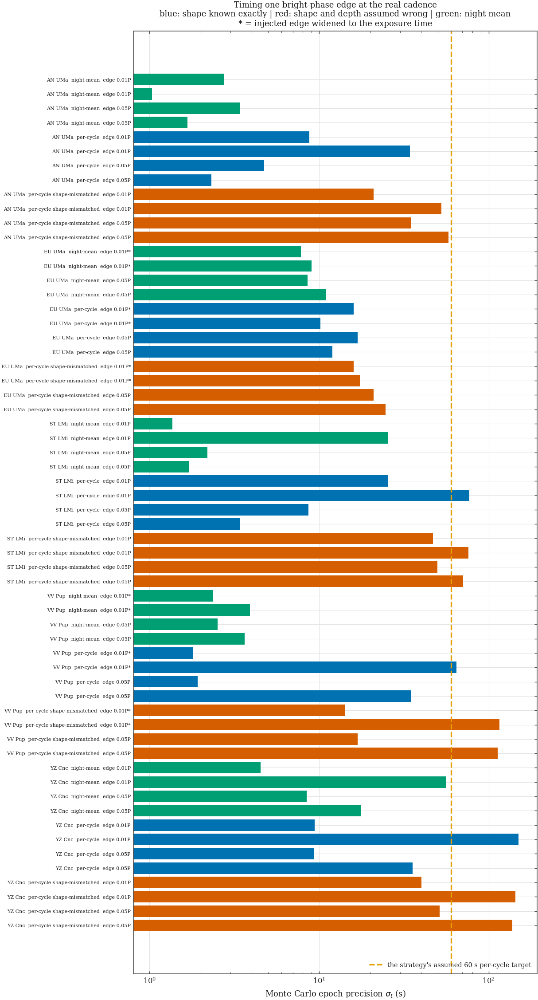
| target | series | night | regime | pts in fit | Δt (s) | injected depth (mag) | season p5–p95 (mag) | σ (mmag) | edge (requested) | edge (after exposure smear) | exposure smear | real-noise series used | σt (s) |
|---|---|---|---|---|---|---|---|---|---|---|---|---|---|
| AN UMa | anuma|e76|g | median | night-mean | 47 | 269 | 0.94 | 1.05 | 23.6 | 0.01 P | 0.01 P | 0.9% | 4 | 1.0 |
| AN UMa | anuma|e76|g | median | night-mean | 47 | 269 | 0.94 | 1.05 | 23.6 | 0.05 P | 0.05 P | 0.9% | 4 | 1.7 |
| AN UMa | anuma|e76|g | median | per-cycle | 25 | 269 | 0.94 | 1.05 | 23.6 | 0.01 P | 0.01 P | 0.9% | 4 | 34.3 |
| AN UMa | anuma|e76|g | median | per-cycle | 25 | 269 | 0.94 | 1.05 | 23.6 | 0.05 P | 0.05 P | 0.9% | 4 | 2.3 |
| AN UMa | anuma|e76|g | median | per-cycle shape-mismatched | 25 | 269 | 0.94 | 1.05 | 23.6 | 0.01 P | 0.01 P | 0.9% | 4 | 52.7 |
| AN UMa | anuma|e76|g | median | per-cycle shape-mismatched | 25 | 269 | 0.94 | 1.05 | 23.6 | 0.05 P | 0.05 P | 0.9% | 4 | 57.8 |
| AN UMa | anuma|e76|g | richest | night-mean | 86 | 149 | 0.84 | 1.05 | 23.6 | 0.01 P | 0.01 P | 0.9% | 4 | 2.8 |
| AN UMa | anuma|e76|g | richest | night-mean | 86 | 149 | 0.84 | 1.05 | 23.6 | 0.05 P | 0.05 P | 0.9% | 4 | 3.4 |
| AN UMa | anuma|e76|g | richest | per-cycle | 45 | 149 | 0.84 | 1.05 | 23.6 | 0.01 P | 0.01 P | 0.9% | 4 | 8.8 |
| AN UMa | anuma|e76|g | richest | per-cycle | 45 | 149 | 0.84 | 1.05 | 23.6 | 0.05 P | 0.05 P | 0.9% | 4 | 4.7 |
| AN UMa | anuma|e76|g | richest | per-cycle shape-mismatched | 45 | 149 | 0.84 | 1.05 | 23.6 | 0.01 P | 0.01 P | 0.9% | 4 | 21.0 |
| AN UMa | anuma|e76|g | richest | per-cycle shape-mismatched | 45 | 149 | 0.84 | 1.05 | 23.6 | 0.05 P | 0.05 P | 0.9% | 4 | 35.0 |
| EU UMa | euuma|e76|i | median | night-mean | 36 | 250 | 1.00 | 1.00 | 76.0 | 0.01 P | 0.0443951 P | 4.4% | 4 | 9.0 |
| EU UMa | euuma|e76|i | median | night-mean | 36 | 250 | 1.00 | 1.00 | 76.0 | 0.05 P | 0.05 P | 4.4% | 4 | 11.0 |
| EU UMa | euuma|e76|i | median | per-cycle | 19 | 250 | 1.00 | 1.00 | 76.0 | 0.01 P | 0.0443951 P | 4.4% | 4 | 10.2 |
| EU UMa | euuma|e76|i | median | per-cycle | 19 | 250 | 1.00 | 1.00 | 76.0 | 0.05 P | 0.05 P | 4.4% | 4 | 12.0 |
| EU UMa | euuma|e76|i | median | per-cycle shape-mismatched | 19 | 250 | 1.00 | 1.00 | 76.0 | 0.01 P | 0.0443951 P | 4.4% | 4 | 17.4 |
| EU UMa | euuma|e76|i | median | per-cycle shape-mismatched | 19 | 250 | 1.00 | 1.00 | 76.0 | 0.05 P | 0.05 P | 4.4% | 4 | 24.6 |
| EU UMa | euuma|e76|i | richest | night-mean | 60 | 250 | 1.00 | 1.00 | 76.0 | 0.01 P | 0.0443951 P | 4.4% | 0 | 7.8 |
| EU UMa | euuma|e76|i | richest | night-mean | 60 | 250 | 1.00 | 1.00 | 76.0 | 0.05 P | 0.05 P | 4.4% | 0 | 8.5 |
| EU UMa | euuma|e76|i | richest | per-cycle | 21 | 250 | 1.00 | 1.00 | 76.0 | 0.01 P | 0.0443951 P | 4.4% | 0 | 16.0 |
| EU UMa | euuma|e76|i | richest | per-cycle | 21 | 250 | 1.00 | 1.00 | 76.0 | 0.05 P | 0.05 P | 4.4% | 0 | 16.8 |
| EU UMa | euuma|e76|i | richest | per-cycle shape-mismatched | 21 | 250 | 1.00 | 1.00 | 76.0 | 0.01 P | 0.0443951 P | 4.4% | 0 | 16.0 |
| EU UMa | euuma|e76|i | richest | per-cycle shape-mismatched | 21 | 250 | 1.00 | 1.00 | 76.0 | 0.05 P | 0.05 P | 4.4% | 0 | 21.0 |
| ST LMi | stlmi|e76|g | median | night-mean | 41 | 389 | 0.71 | 1.45 | 29.0 | 0.01 P | 0.01 P | 0.9% | 4 | 25.6 |
| ST LMi | stlmi|e76|g | median | night-mean | 41 | 389 | 0.71 | 1.45 | 29.0 | 0.05 P | 0.05 P | 0.9% | 4 | 1.7 |
| ST LMi | stlmi|e76|g | median | per-cycle | 16 | 389 | 0.71 | 1.45 | 29.0 | 0.01 P | 0.01 P | 0.9% | 4 | 76.9 |
| ST LMi | stlmi|e76|g | median | per-cycle | 16 | 389 | 0.71 | 1.45 | 29.0 | 0.05 P | 0.05 P | 0.9% | 4 | 3.4 |
| ST LMi | stlmi|e76|g | median | per-cycle shape-mismatched | 16 | 389 | 0.71 | 1.45 | 29.0 | 0.01 P | 0.01 P | 0.9% | 4 | 75.8 |
| ST LMi | stlmi|e76|g | median | per-cycle shape-mismatched | 16 | 389 | 0.71 | 1.45 | 29.0 | 0.05 P | 0.05 P | 0.9% | 4 | 70.6 |
| ST LMi | stlmi|e76|g | richest | night-mean | 152 | 219 | 0.67 | 1.45 | 29.0 | 0.01 P | 0.01 P | 0.9% | 4 | 1.4 |
| ST LMi | stlmi|e76|g | richest | night-mean | 152 | 219 | 0.67 | 1.45 | 29.0 | 0.05 P | 0.05 P | 0.9% | 4 | 2.2 |
| ST LMi | stlmi|e76|g | richest | per-cycle | 30 | 219 | 0.67 | 1.45 | 29.0 | 0.01 P | 0.01 P | 0.9% | 4 | 25.6 |
| ST LMi | stlmi|e76|g | richest | per-cycle | 30 | 219 | 0.67 | 1.45 | 29.0 | 0.05 P | 0.05 P | 0.9% | 4 | 8.6 |
| ST LMi | stlmi|e76|g | richest | per-cycle shape-mismatched | 30 | 219 | 0.67 | 1.45 | 29.0 | 0.01 P | 0.01 P | 0.9% | 4 | 46.8 |
| ST LMi | stlmi|e76|g | richest | per-cycle shape-mismatched | 30 | 219 | 0.67 | 1.45 | 29.0 | 0.05 P | 0.05 P | 0.9% | 4 | 49.9 |
| VV Pup | vvpup|e76|g | median | night-mean | 26 | 510 | 1.00 | 3.02 | 19.1 | 0.01 P | 0.0398406 P | 4.0% | 4 | 3.9 |
| VV Pup | vvpup|e76|g | median | night-mean | 26 | 510 | 1.00 | 3.02 | 19.1 | 0.05 P | 0.05 P | 4.0% | 4 | 3.6 |
| VV Pup | vvpup|e76|g | median | per-cycle | 10 | 510 | 1.00 | 3.02 | 19.1 | 0.01 P | 0.0398406 P | 4.0% | 4 | 64.6 |
| VV Pup | vvpup|e76|g | median | per-cycle | 10 | 510 | 1.00 | 3.02 | 19.1 | 0.05 P | 0.05 P | 4.0% | 4 | 35.0 |
| VV Pup | vvpup|e76|g | median | per-cycle shape-mismatched | 10 | 510 | 1.00 | 3.02 | 19.1 | 0.01 P | 0.0398406 P | 4.0% | 4 | 115.4 |
| VV Pup | vvpup|e76|g | median | per-cycle shape-mismatched | 10 | 510 | 1.00 | 3.02 | 19.1 | 0.05 P | 0.05 P | 4.0% | 4 | 113.1 |
| VV Pup | vvpup|e76|g | richest | night-mean | 52 | 124 | 0.93 | 3.02 | 19.1 | 0.01 P | 0.0398406 P | 4.0% | 4 | 2.4 |
| VV Pup | vvpup|e76|g | richest | night-mean | 52 | 124 | 0.93 | 3.02 | 19.1 | 0.05 P | 0.05 P | 4.0% | 4 | 2.5 |
| VV Pup | vvpup|e76|g | richest | per-cycle | 40 | 124 | 0.93 | 3.02 | 19.1 | 0.01 P | 0.0398406 P | 4.0% | 4 | 1.8 |
| VV Pup | vvpup|e76|g | richest | per-cycle | 40 | 124 | 0.93 | 3.02 | 19.1 | 0.05 P | 0.05 P | 4.0% | 4 | 1.9 |
| VV Pup | vvpup|e76|g | richest | per-cycle shape-mismatched | 40 | 124 | 0.93 | 3.02 | 19.1 | 0.01 P | 0.0398406 P | 4.0% | 4 | 14.3 |
| VV Pup | vvpup|e76|g | richest | per-cycle shape-mismatched | 40 | 124 | 0.93 | 3.02 | 19.1 | 0.05 P | 0.05 P | 4.0% | 4 | 16.8 |
| YZ Cnc | yzcnc|e7|G | median | night-mean | 35 | 385 | 0.15 | 1.80 | 17.2 | 0.01 P | 0.01 P | 0.1% | 4 | 56.3 |
| YZ Cnc | yzcnc|e7|G | median | night-mean | 35 | 385 | 0.15 | 1.80 | 17.2 | 0.05 P | 0.05 P | 0.1% | 4 | 17.6 |
| YZ Cnc | yzcnc|e7|G | median | per-cycle | 14 | 385 | 0.15 | 1.80 | 17.2 | 0.01 P | 0.01 P | 0.1% | 4 | 150.1 |
| YZ Cnc | yzcnc|e7|G | median | per-cycle | 14 | 385 | 0.15 | 1.80 | 17.2 | 0.05 P | 0.05 P | 0.1% | 4 | 35.7 |
| YZ Cnc | yzcnc|e7|G | median | per-cycle shape-mismatched | 14 | 385 | 0.15 | 1.80 | 17.2 | 0.01 P | 0.01 P | 0.1% | 4 | 143.6 |
| YZ Cnc | yzcnc|e7|G | median | per-cycle shape-mismatched | 14 | 385 | 0.15 | 1.80 | 17.2 | 0.05 P | 0.05 P | 0.1% | 4 | 137.6 |
| YZ Cnc | yzcnc|e7|G | richest | night-mean | 72 | 192 | 0.26 | 1.80 | 17.2 | 0.01 P | 0.01 P | 0.1% | 4 | 4.5 |
| YZ Cnc | yzcnc|e7|G | richest | night-mean | 72 | 192 | 0.26 | 1.80 | 17.2 | 0.05 P | 0.05 P | 0.1% | 4 | 8.5 |
| YZ Cnc | yzcnc|e7|G | richest | per-cycle | 35 | 192 | 0.26 | 1.80 | 17.2 | 0.01 P | 0.01 P | 0.1% | 4 | 9.4 |
| YZ Cnc | yzcnc|e7|G | richest | per-cycle | 35 | 192 | 0.26 | 1.80 | 17.2 | 0.05 P | 0.05 P | 0.1% | 4 | 9.4 |
| YZ Cnc | yzcnc|e7|G | richest | per-cycle shape-mismatched | 35 | 192 | 0.26 | 1.80 | 17.2 | 0.01 P | 0.01 P | 0.1% | 4 | 40.1 |
| YZ Cnc | yzcnc|e7|G | richest | per-cycle shape-mismatched | 35 | 192 | 0.26 | 1.80 | 17.2 | 0.05 P | 0.05 P | 0.1% | 4 | 51.3 |
Two things follow. First, the binding variable is cadence, not aperture or exposure: σt is set by whether a sample lands on the ingress ramp, and the unit test behind this function shows that improving the photometry 30× improves the epoch by under 5×. A filter cycle that returns to each band twice as fast is worth more than any realistic gain in signal-to-noise. Second, the next measurement this project needs is the edge shape itself: measure the ingress duration from the deepest night's stacked cycles and the 50 s systematic collapses. Caveat: 6 of these rows fell back to Gaussian noise because no check star covered 40% of that night — they are optimistic by the red-noise factor of §2.
The strategy document (CV_TimeSeries/ANALYSIS_STRATEGY.md)
sets out five science questions and several structural claims. Each was
written before the photometry existed. Which of them does the measured
performance actually support?
Every verdict below is recomputed from the tables in §§1–5 whenever this build runs, and the “deciding number” column is assembled from query results — so the table cannot drift away from the evidence it rests on. The thresholds separating the verdicts are the strategy document's own stated requirements; this page tests the plan against the data, it does not invent new criteria.
| # | goal | the claim it needs | verdict | the number that decides it | why | what the data can support instead |
|---|---|---|---|---|---|---|
| Q1 | Accretion-state-resolved, orbit-phase-resolved cyclotron colour curves of ST LMi, VV Pup and EU UMa (two within-era analyses each) | single-night, cycle-resolved, state-tagged quasi-simultaneous three-colour coverage | SUPPORTED-WITH-CAVEATS | full-orbit nights carrying ALL THREE filters, of all full-orbit nights: ST LMi 15 of 27; VV Pup 0 of 14; EU UMa 0 of 20; AN UMa 4 of 11. median COLOUR-point error vs the single-band precision it was graded on: AN UMa 86 mmag vs 24 mmag (3.6x, 12 band pairs, median filter offset 252 s); ST LMi 43 mmag vs 20 mmag (2.1x, 45 band pairs, median filter offset 118 s); YZ Cnc 29 mmag vs 17 mmag (1.7x, 21 band pairs, median filter offset 79 s) | A colour curve needs one night, three filters, a whole orbit. Counted from the USABLE frames: a night qualifies when its span exceeds one orbital period in >= 12 frames of that filter. The precision quoted is the COLOUR point's, not one band's: the filters interleave rather than fire together, so the target's own sweep between the two exposures enters in quadrature and is usually the largest term. | ST LMi carries a genuine three-colour claim and carries it well. VV Pup and EU UMa do not: their colour panels have essentially no three-filter full-orbit nights to draw on and should be replaced by single-band folded morphology plus state history. Retitle the paper around ST LMi rather than around three polars, and quote colours with the non-simultaneity term attached - on the bright-phase edges it dominates. |
| Q2 | Bright-phase timing as an accretion-spot longitude tracker (per-cycle O-C against decades-baseline ephemerides) | per-cycle sigma_t < 60 s, demonstrated by injection before adoption (strategy §4.16) | SUPPORTED-WITH-CAVEATS | ST LMi per-cycle sigma_t, shape known exactly / shape 5x wrong and depth 20% wrong: RICHEST night 26 s / 50 s (cadence 219 s); MEDIAN-density night 77 s / 76 s (cadence 389 s) - ABOVE the 60 s bar. Night-mean 2.2 s. 27 full-orbit nights are available to the tier | The 60 s threshold is met on the demonstration night with almost no margin once the edge shape is admitted to be unknown - and the shape IS unknown and colour-dependent. On the median night it is not met at all. sigma_t is set by whether samples land on the ingress ramp, so it tracks CADENCE, not signal-to-noise: the two nights differ by a factor of about two in cadence and that alone moves sigma_t across the bar. A per-cycle tier therefore exists, but only on the dense half of the nights. | Report per-cycle timings only from nights whose cadence matches the demonstration night, with an explicit shape-systematic term of ~50 s; fall back to night-mean timings elsewhere (the strategy's own §6.10a), which are an order of magnitude better and carry the same shape question. And fix the cadence: a faster filter cycle is worth more here than any realistic gain in signal-to-noise. |
| Q3 | YZ Cnc 2024: superhump period (and dP_sh/dt) inside confirmed outburst states; orbital hump + flickering in quiescence | detect and time a 0.1-0.3 mag superhump on consecutive-night blocks | SUPPORTED-WITH-CAVEATS | 90% recovery semi-amplitude at P_orb, scored as DETECTION at a known period: 12 mmag on the richest single night [11 mmag-13 mmag], 8 mmag on the detrended season. Scored instead as blind period DETERMINATION the same night gives 187 mmag - the number the first version of this page quoted, which measures the 2.1 cycles the night holds, not the amplitude | Superhumps have semi-amplitudes of 50-150 mmag. YZ Cnc's superhump period is not known in advance the way P_orb is, so the blind-search contour is the relevant one for measuring P_sh - but detecting that a superhump is PRESENT on a given night is the known-period question, and one night answers it comfortably. The consecutive-night blocks remain the measurement of dP_sh/dt, exactly as the strategy assumes. | If the dense runs were quiescent, flickering statistics and the orbital hump are comfortably measurable at this precision - but no multi-year period change, as the strategy already forbids. |
| S1 | Absolute calibration: 'nightly REFCAT2 tie -> PS1 AB to 0.01-0.02 mag' (strategy §5) | every published magnitude on a standard system | NOT SUPPORTED | 7 of 14 (target, era) blocks carry a catalogue magnitude tie; the other 7 were tied by WCS with zero catalogue matches, so their magnitudes sit on the ensemble's own arbitrary gauge | Ensemble differential photometry fixes RELATIVE magnitudes only. Nothing measured here is wrong because of it - every precision number on this page is differential - but no magnitude can be published on a standard system until the tie is made, and Q4's cross-survey framing depends on it. | Publish differential magnitudes plus per-series offsets now, and make the catalogue tie a separate, testable stage. This is the highest-value single action on the whole list. |
| S2 | Cross-era colour comparison after the 2024-05 instrument seam (strategy §4.13/4.13a) | morphology-level cross-era comparison, never zero points | SUPPORTED-WITH-CAVEATS | eras never overlap in time for any target (AN UMa: no overlap; EU UMa: no overlap; ST LMi: no overlap; VV Pup: no overlap; YZ Cnc: no overlap) | Camera and epoch are perfectly confounded, exactly as the strategy states; nothing in the measured data relaxes it. | Keep the within-era discipline. The October 2026 g/r/i season is the only real repair, and it repairs ST LMi only. |
| Q4 | Long-term accretion-state duty cycles for the three polars, embedded in the survey record | nightly means good to much better than the 1-3 mag high/low state separation | SUPPORTED-WITH-CAVEATS | independent epochs per target: AN UMa 13 nights over 382 d (+/-14 pp on a 50% duty cycle); EU UMa 30 nights over 510 d (+/-9 pp on a 50% duty cycle); ST LMi 33 nights over 740 d (+/-9 pp on a 50% duty cycle); VV Pup 27 nights over 434 d (+/-10 pp on a 50% duty cycle); YZ Cnc 23 nights over 93 d (+/-10 pp on a 50% duty cycle). Catalogue tie: 7 of 14 (target, era) blocks | Classifying ONE night is easy - per-point precision beats the state separation by a factor of 20-100, which is what this verdict used to say. It is not what the goal asks. A duty cycle is a fraction of time, so its error bar is binomial in the number of independent nights: 33-13 nights give +/-9 to +/-14 percentage points, before any correction for seasonal observability bias in WHEN those nights fall. And 'embedded in the survey record' means joining ASAS-SN/ZTF, which needs the catalogue tie S1 grades NOT SUPPORTED. | State the duty cycle with its binomial interval and the season structure, or restrict the claim to within-series relative state history, where the ensemble gauge is stable and no tie is needed. Q4 and S1 cannot both stand as they were written. |
| Q5 | AN UMa as a fifth target in the colour analysis | at least 8 full-orbit nights with all three filters | NOT SUPPORTED | three-filter full-orbit nights measured: 4 (criterion: >= 8); 11 full-orbit nights in any filter | The strategy set this criterion itself and the solved photometry answers it directly. | Timing and state history only, or drop - the strategy's own fallback. The AN UMa photometry is good; it is the three-filter scheduling that fails. |
| S3 | Period verification from the multi-season data - 'confirmation and alias hygiene' (strategy §4.15) | select the right alias family from the combined seasons | SUPPORTED-WITH-CAVEATS | the +/-1 c/d aliases carry up to 0.84 of the window power on the resolved multi-night sets (0.93 including the sidereal comb). MEASURED misidentification rate of the tallest peak, by injected semi-amplitude: 50 mmag -> 96% true, 4% alias; 100 mmag -> 99% true, 0% alias; 500 mmag -> 100% true, 0% alias; 1000 mmag -> 100% true, 0% alias | Window power says how much power the SAMPLING makes available at f +/- k c/d. It cannot say whether the wrong peak wins - that depends on the signal's amplitude and on how many nights there are, and both are measurable with the injection machinery this page already owns. Measured, the tallest peak lands on the true frequency at every amplitude these polars actually show (0.5-2 mag, one to two orders above the season contour). The alias risk is real at threshold amplitudes and negligible at the real ones. Note also that the headline window number is the maximum over the solar AND sidereal combs; for ground-based scheduling the solar-day comb is the relevant one. | Publish the window, the solar-day alias power and the measured misidentification rate beside every periodogram, and state the alias caveat as amplitude-dependent rather than absolute. |
| S4 | Detection limits quoted as A_min = sigma sqrt(4z/N) (strategy §4.21: 4-8 mmag per target) | an analytic detection limit on white, alias-free data | NOT SUPPORTED | the MEASURED 90% recovery amplitude at a KNOWN period is 0.5-2.8x the analytic formula at the same sigma and N (14 contours) - i.e. the formula errs in BOTH directions; for blind period DETERMINATION on the multi-night sets it is 1.5-4.9x, and on a single night 6.0-19.3x. Median Allan slope -0.37 against a white-noise NULL of -0.55 for ladders this short (not -0.50); 31 of 92 ladders are redder than their own 95th-percentile null | The formula assumes white noise, an alias-free window, and one fixed look-elsewhere factor z. This archive has none of the three, and the errors do not even share a sign: at a KNOWN period the formula is conservative (it charges a blind-search penalty the paper does not owe), while for a genuine blind search it is optimistic by up to a factor of five. A single number that is wrong by 2-3x in either direction depending on which question is asked cannot be a detection limit. Note that the first version of this page reported 1.5-8.5x, and its largest ratios came from single-night scopes scored on period determination - where the acceptance window is 20-70x narrower than the peak and no amplitude can succeed. | Quote the injection contour, per target, per regime and per SCORE MODE. Per-night detrending recovers part of the gap and its cost is measured here too (regime 'season-dt'). |
| S5 | Expected precision: '8-10 mmag/frame at r <= 15, 20-25 mmag at r = 16.5' (strategy §5) | per-frame precision as a function of brightness | SUPPORTED-WITH-CAVEATS | best measured floor 4.3 mmag, typical floor 13 mmag; achieved precision at the targets themselves 9 mmag-75 mmag. Magnitude-matched field stars (including every star the comp stability cut dropped) scatter 0.96x as much as the held-out check stars over 24 series | The 8-25 mmag band is right for the BRIGHT end. It is not what the targets get: every CV here sits near the faint end of its own comparison ensemble, so the number that matters is several times worse than the headline. The check stars ARE a selected sample - survivors of the comp stability cut, drawn nearest the target's brightness - so their scatter was tested against every star of the same brightness whatever role it was given. The ratio is close to 1, so the precision numbers are not optimistic by selection. | State the precision AT EACH TARGET'S BRIGHTNESS, not the best the camera can do. The floor itself is instrumental (tens of times scintillation) and is the thing to attack. |
In the order that most changes what this data set can claim:
{kind=link}
{kind=link}
{kind=link}
{kind=link}
{kind=link}
{kind=link}
{kind=link}
{kind=link}
{kind=link}
{kind=link}
{kind=link}
{kind=link}